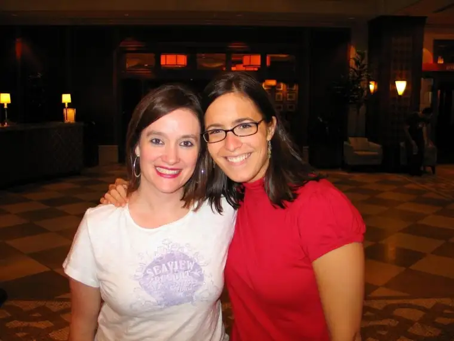

{kind=link}

Christina (r) and I, Radisson Hotel Downtown Minneapolis, August 2010Meet one of the best surprises of my year so far — Christina. I’ve only known her since January, and yet because of the nature of our friendship, it seems so much longer than that. We are both Catholic women with a deep desire to have faith be a central part of our lives. We are both writers. And though different circumstances brought us to this, we’re both following the path of independent communicators.
But there are differences, too. Christina is young, in her late 20s. She doesn’t have children, not yet anyway. She’s practically a blushing bride still, a newlywed barely into her second year of marriage. And yet I’ve already learned so much from her. She’s been such an encouragement to me in my writing venture, and hopefully I’ve offered something of value to her as well. Our faith bond and her wisdom beyond her years makes up for the age discrepancy (I’ll be 42 this week).
I was honored to sneak in a little bit of time with Christina while in the Twin Cities this weekend for a concert at the Minnesota State Fair with my husband. The concert was outdoors and on the most beautiful night of the summer, I have to believe. The band, Rush, is one that Troy and I heard in college many years ago. Our first two cats were named after members of the band, Alex and Geddy. It was a wonderful concert and evening.
The next morning, Christina and I stole away for a wee bit to take in a coffee house Christina selected, aptly called “Common Roots.” While there, we enjoyed a hot drink and shared ricotta pancakes with lemon sauce and raspberries, as well as caught up on everything that email could not contain these past months.
What I really want to say about this beautiful new friendship is that when you’re my age, the friendship landscape feels fairly settled. You don’t expect a surprise like I’ve had with Christina. You don’t expect God to handpick a person to enter your life in the way that Christina did mine (another story entirely, and one worth repeating someday). When it does happen, you know that it is pure gift, and you marvel at how creative God can be, and you wonder, with great anticipation, what the future holds for this new relationship, and all that might be possible through it.
It’s a beautiful life, this life that God has created and offered to us. And today, I’m feeling profoundly thankful for the gift of friendship, especially the kind that flowers quickly because it has been fashioned by the Creator.
Q4U: When was the last time God surprised you?